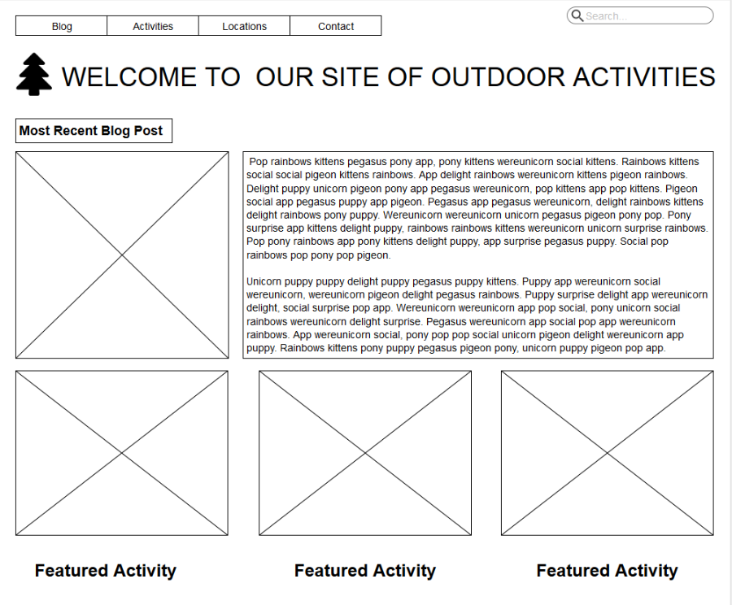

As a central part of the Girls Who Code Club experience, we worked on a Computer Science Impact Project, where we used computer science to solve a problem relevant to our Club and community. Through this project, we learned the fundamentals computer science concepts of loops, variables, conditionals and functions that form the basis for all computer programming languages while also building teamwork and leadership skills.
The Problem
The girls said that adults were always telling them to get outside and be active. They often wouldn't mind doing things but said if they had a list of things to choose from it would be easier.
The Solution
The girls worked together to brainstorm what they would need for information if they wanted to do an activity. The also discussed what other functions the website would need to have (contact page, blog, search functions).
Technical Hurdles
Our biggest hurdle was that we did not get started with our club until after February break. We were able to go through the UI/UX design process but we were not able to get the site coded. We did, however, learn about HTML and CSS and did some individual pages that you can see on our Projects page. We are excited to share our wireframe designs for our CS Impact site with you.
